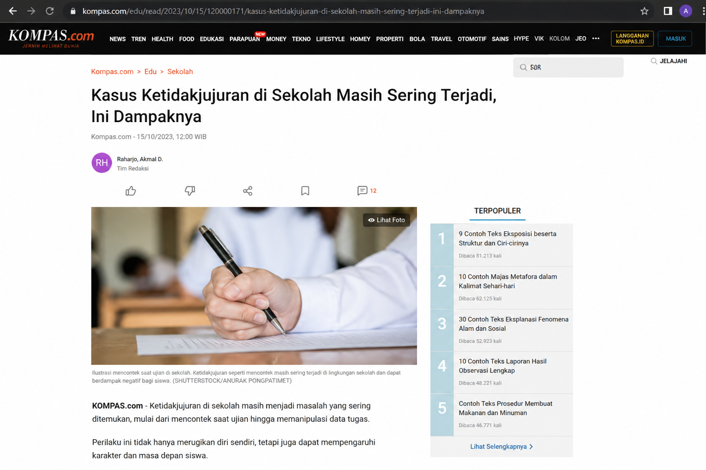
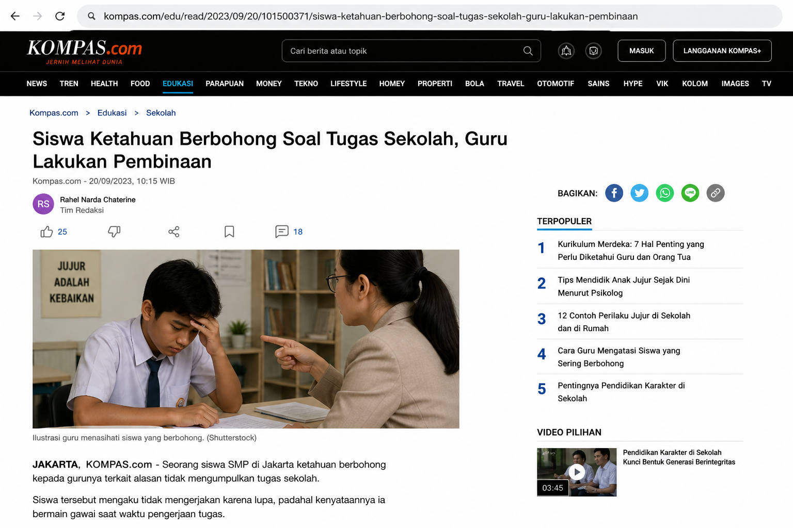

Pendahuluan
Hakikat manusia merupakan salah satu pembahasan penting dalam filsafat dan agama. Dalam konteks agama Islam, manusia tidak hanya dipandang sebagai makhluk biologis, tetapi juga sebagai makhluk spiritual dan sosial yang memiliki tanggung jawab besar dalam kehidupannya. Pemahaman tentang hakikat manusia sangat penting karena menjadi dasar dalam menentukan perilaku, tujuan hidup, serta hubungan manusia dengan Tuhan, sesama, dan lingkungan.
Dalam Islam, manusia diciptakan dengan berbagai potensi seperti akal, hati, dan nafsu. Potensi tersebut harus dikembangkan secara seimbang agar manusia dapat menjalankan perannya sesuai dengan ajaran agama. Oleh karena itu, memahami hakikat manusia akan membantu manusia menyadari tujuan penciptaannya dan menghindari perilaku yang menyimpang dari nilai-nilai agama.
Pembahasan
1. Pengertian Hakikat Manusia dalam Islam
Hakikat manusia dalam Islam adalah makhluk ciptaan Allah SWT yang memiliki dimensi jasmani dan rohani. Manusia dibekali dengan potensi berupa akal (untuk berpikir), qalb (hati untuk merasakan dan menilai), serta nafs (dorongan atau keinginan).
Dalam Al-Qur’an, manusia disebut dengan beberapa istilah, yaitu:
Ketiga istilah ini menunjukkan bahwa manusia adalah makhluk yang kompleks dan sempurna dibandingkan makhluk lainnya.
2. Kedudukan Manusia dalam Islam
a. Manusia sebagai Hamba Allah (‘Abdullah)
Manusia diciptakan untuk beribadah kepada Allah. Segala aktivitas yang dilakukan manusia dapat bernilai ibadah jika dilandasi niat yang benar.
b. Manusia sebagai Khalifah di Bumi
Manusia juga berperan sebagai pemimpin di bumi yang bertugas menjaga, mengelola, dan memanfaatkan alam dengan baik serta bertanggung jawab.
Studi Kasus Perilaku yang Tidak Sesuai Ajaran Agama
Kasus Mencontek

Mencontek merupakan perilaku tidak jujur yang sering terjadi di lingkungan pendidikan. Tindakan ini menunjukkan bahwa seseorang tidak memanfaatkan potensi akalnya dengan baik dan lebih memilih jalan instan.
Kasus Berbohong / Hoax

Penyebaran berita bohong (hoax) merupakan salah satu masalah besar di era digital. Banyak orang menyebarkan informasi tanpa memastikan kebenarannya.
Kasus Manipulasi Data

Manipulasi data sering terjadi dalam dunia kerja maupun pendidikan, seperti memalsukan laporan atau mengubah data demi keuntungan pribadi.
Perspektif Islam tentang Manusia sebagai Makhluk Spiritual, Sosial, dan Bertanggung Jawab
Dalam perspektif Islam, manusia merupakan makhluk yang memiliki dimensi yang sangat luas, yaitu sebagai makhluk spiritual, sosial, dan juga makhluk yang bertanggung jawab atas segala perbuatannya. Ketiga aspek ini tidak dapat dipisahkan karena saling berkaitan dalam membentuk kepribadian manusia yang utuh.
Sebagai makhluk spiritual, manusia memiliki hubungan langsung dengan Allah SWT. Hubungan ini diwujudkan melalui ibadah seperti shalat, doa, dzikir, dan berbagai bentuk ketaatan lainnya. Nilai spiritual ini menjadi pedoman dalam kehidupan agar manusia tidak terjerumus ke dalam perbuatan yang menyimpang.
Sebagai makhluk sosial, manusia hidup berdampingan dengan orang lain. Oleh karena itu, manusia harus menjunjung tinggi nilai kejujuran, saling menghormati, tolong-menolong, dan menjaga hubungan baik dalam masyarakat. Tanpa adanya nilai sosial yang baik, kehidupan manusia akan dipenuhi dengan konflik dan ketidakadilan.
Selain itu, manusia juga merupakan makhluk yang bertanggung jawab. Setiap tindakan yang dilakukan akan dimintai pertanggungjawaban di hadapan Allah SWT. Oleh karena itu, manusia harus menjaga amanah, berlaku jujur, serta menghindari perbuatan yang merugikan orang lain.
Dengan memahami ketiga aspek tersebut, manusia diharapkan mampu menjalani kehidupan yang seimbang antara hubungan dengan Tuhan, sesama manusia, dan lingkungan sekitar.
Kesimpulan
Hakikat manusia dalam perspektif Islam adalah makhluk ciptaan Allah yang memiliki potensi besar berupa akal, hati, dan nafs. Manusia memiliki kedudukan sebagai hamba Allah dan khalifah di bumi, yang mengharuskannya untuk menjalankan kehidupan sesuai dengan nilai-nilai agama.
Namun, dalam kenyataannya masih banyak perilaku manusia yang menyimpang, seperti mencontek, berbohong, dan manipulasi data. Hal ini menunjukkan bahwa manusia belum sepenuhnya memahami dan menjalankan hakikat dirinya. Oleh karena itu, diperlukan kesadaran dan pendidikan yang baik agar manusia dapat mengembangkan potensinya secara optimal dan hidup sesuai dengan ajaran agama.
Referensi
Ramayulis. (2008). Ilmu Pendidikan Islam.
Arifin, M. (2008). Filsafat Pendidikan Islam.
Aziz, A. (2013). Hakikat Manusia dalam Perspektif Islam.
Siregar, E. (2017). Hakikat Manusia dalam Perspektif Al-Qur’an.
Nuryamin. (2017). Kedudukan Manusia dalam Perspektif Pendidikan Islam.
Al-Qur’an dan Terjemahannya – Kementerian Agama RI